SHPE 2018-2019 Nominees
Executive Positions

Diego Ruiz
Running for: President
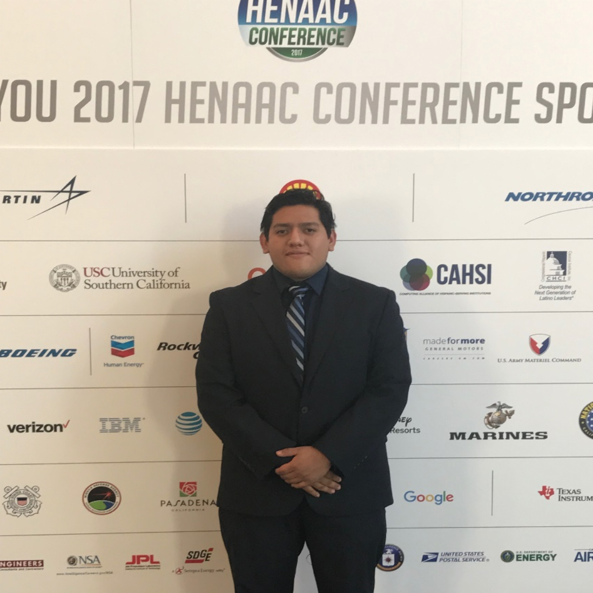
Cristian Sanchez
Running for: President

Gery Dawson Martinez
Running for: Vice President

Alyssa Rendon
Running for: Communications Executive
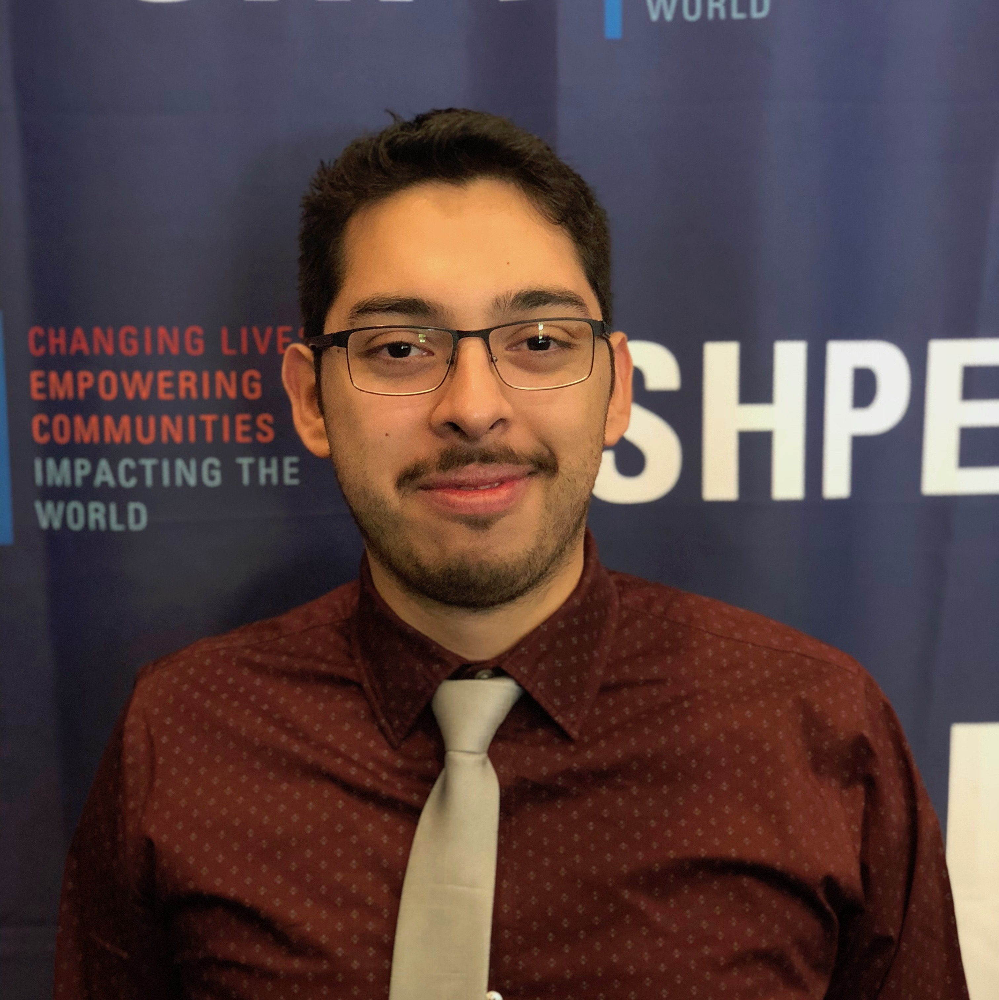
Jesus Lopez Reynosa
Running for: Treasurer
Director Positions

Teresa Ramirez
Running for: Director of Outreach
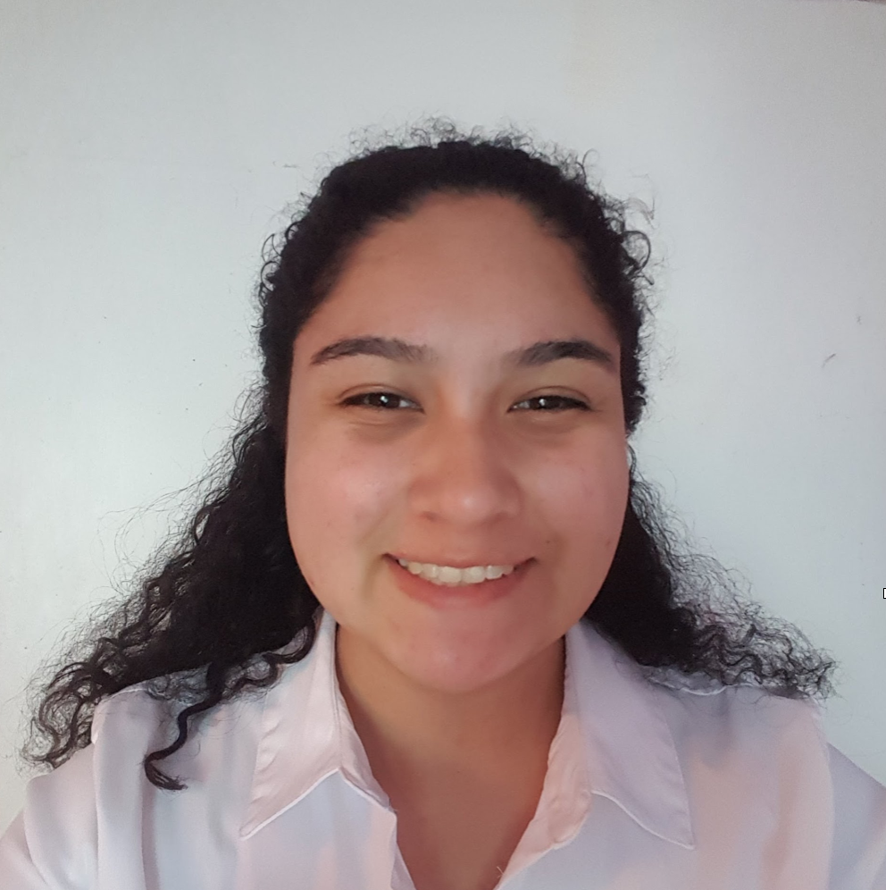
Leslie Garcia
Running for: Director of Academics

Abel Barajas
Running for: Director of Membership
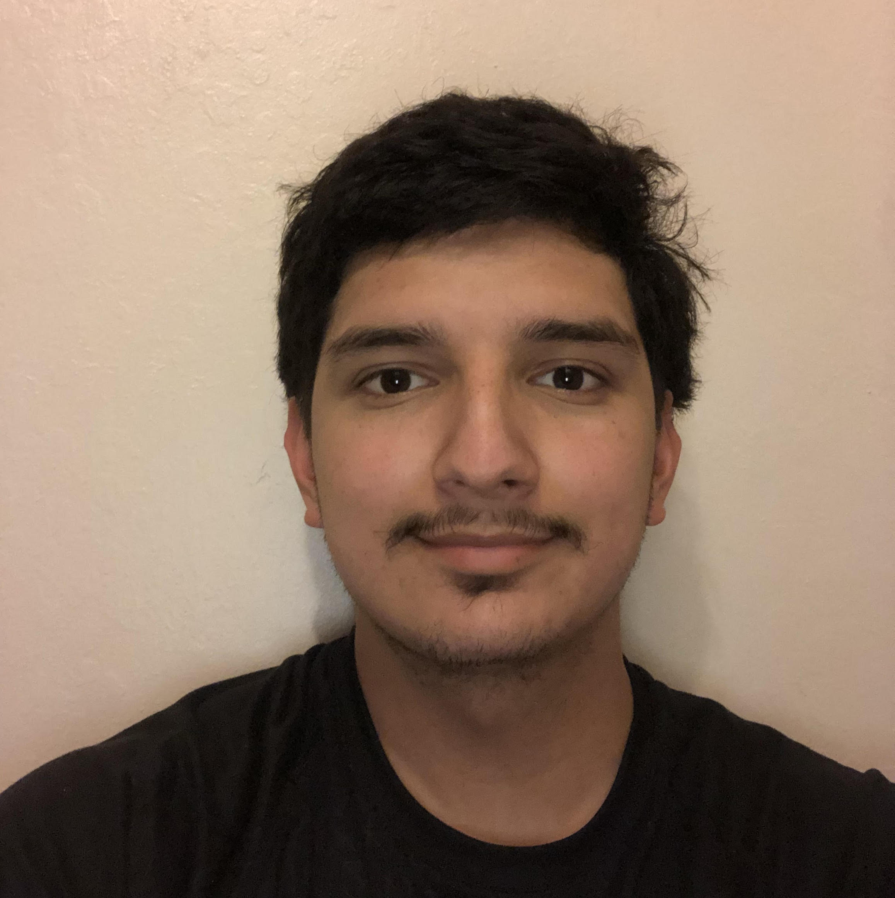
Jesse Melendez
Running for: Director of Membership
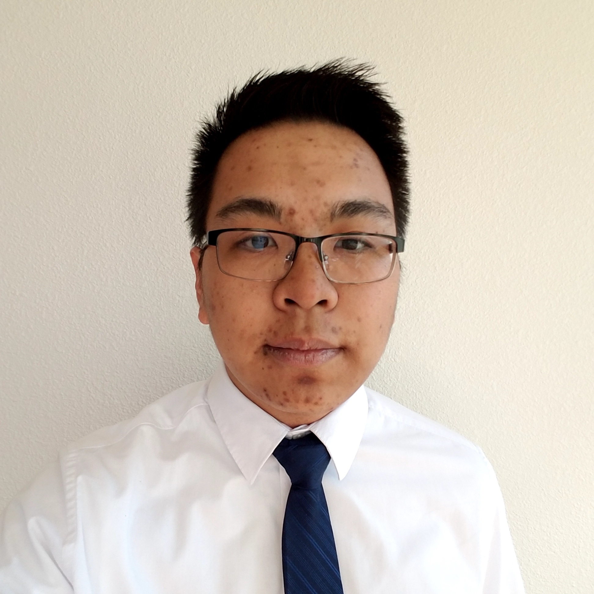
Eric Ladiao
Running for: Director of Professional Development
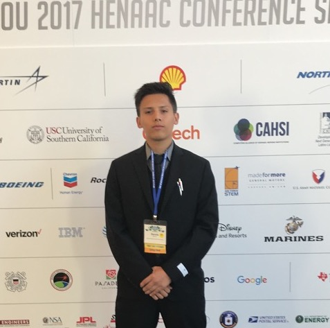
Dennis Gutierrez
Running for: Director of Fundraising
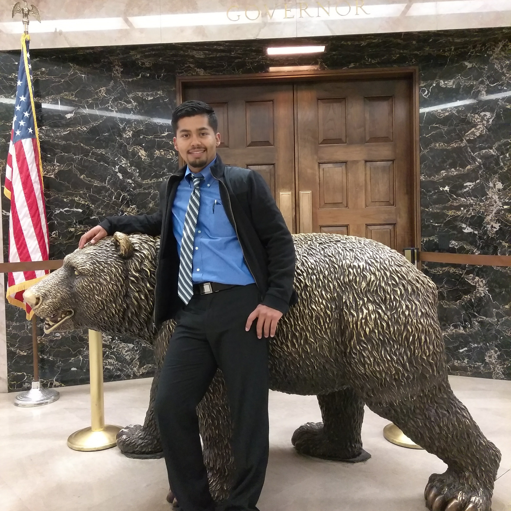
Oscar Arteaga
Running for: Director of Events

Alan Rodriguez
Running for: Director of Events
Chair Positions
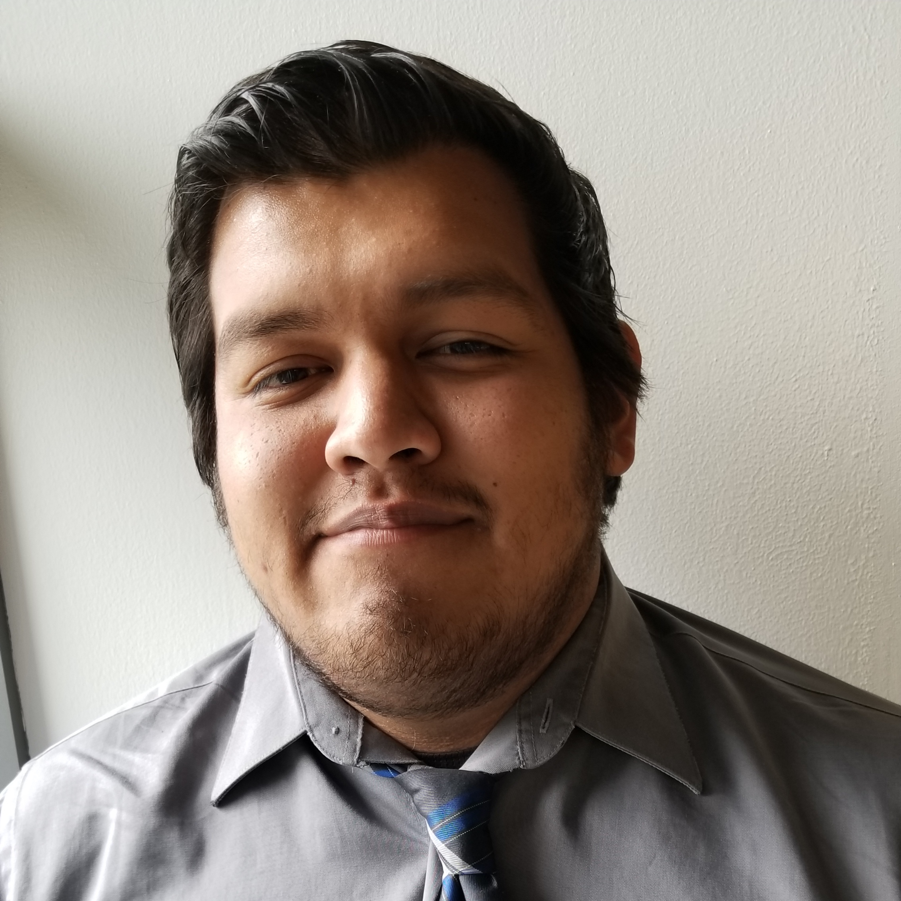
Javier Romero
Running for: Historian
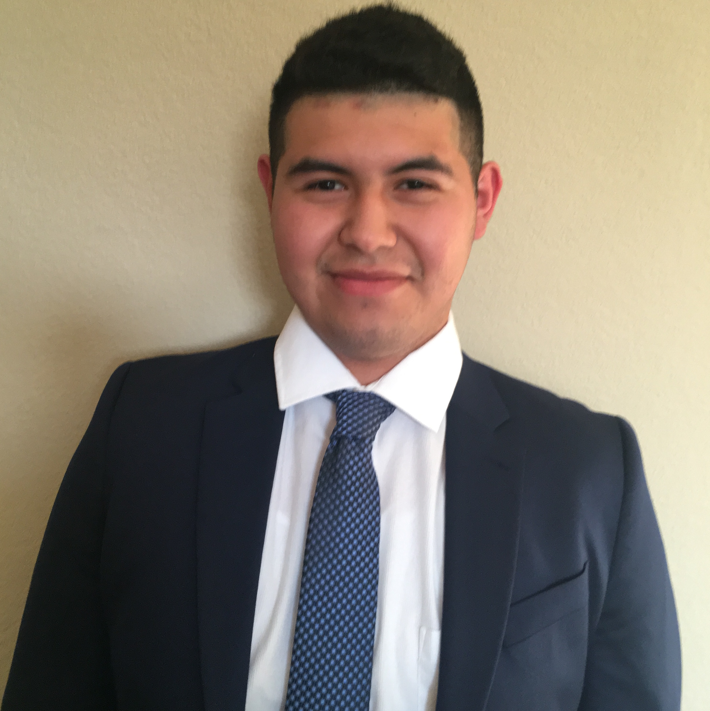
Adrian Sanchez
Running for: Historian

Renan Jauregui Jr.
Running for: Historian
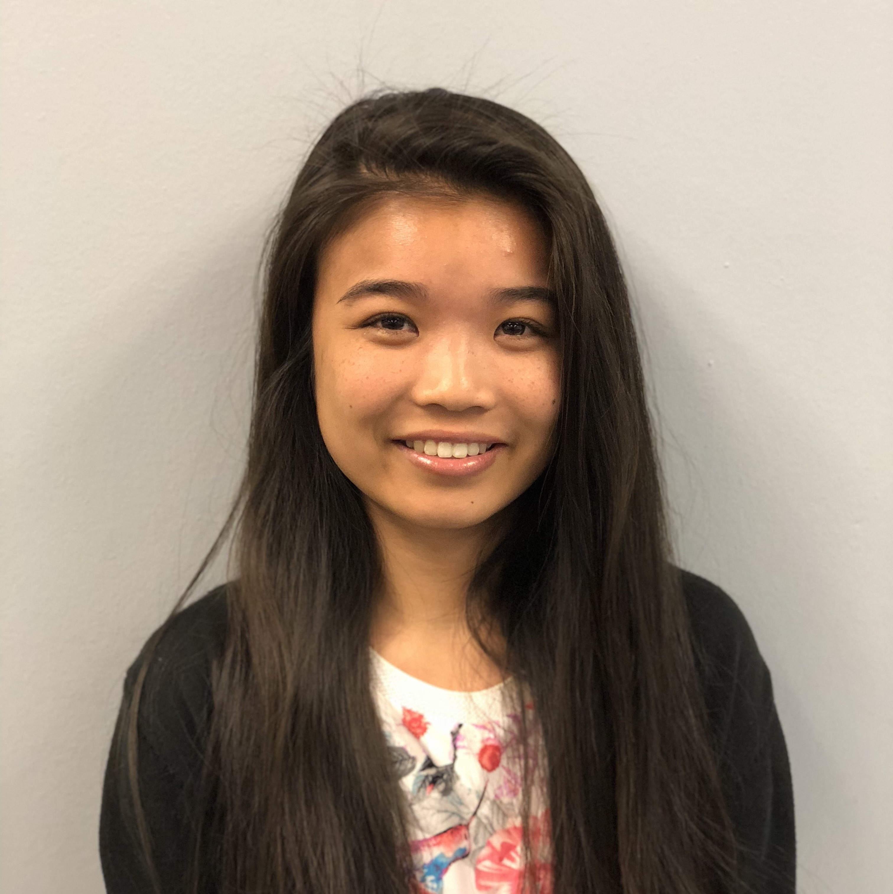
Madina Srey
Running for: Webmaster
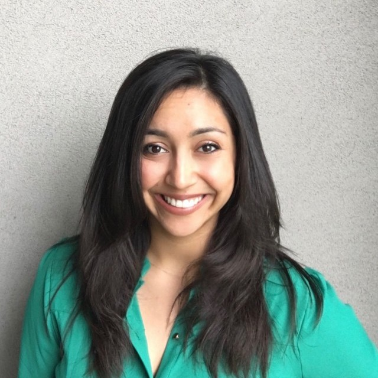